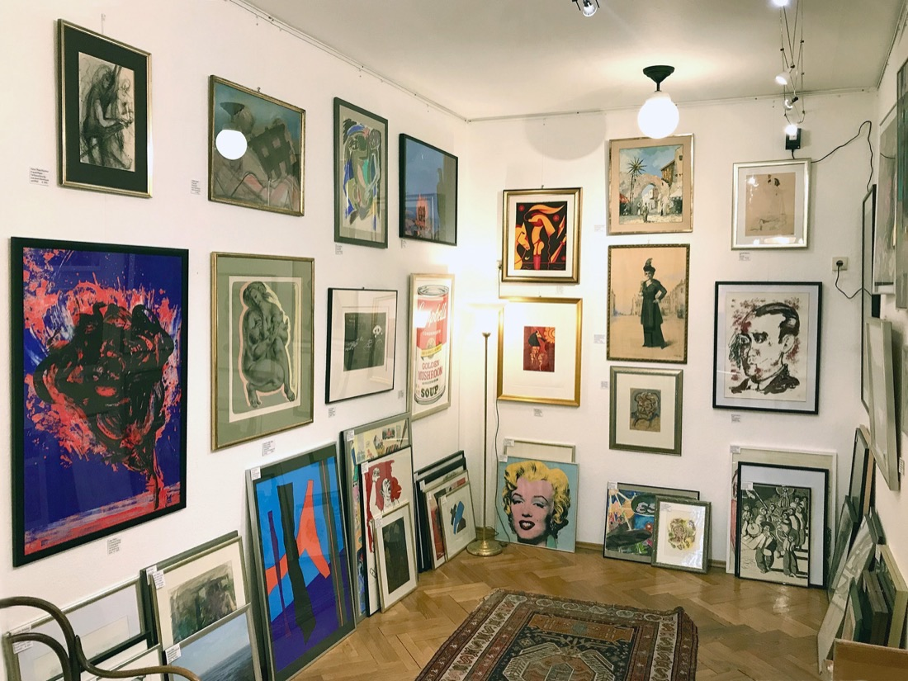

Kunst & Grafik
Bilder, Gemälde und Aquarelle sowie Grafik – vorwiegend Zeichnungen und Drucke der Klassischen Moderne.
Die besondere Neigung des Galeristen gilt der Grafik – von Ernst Barlach bis Magnus Zeller – und Gemälden von Lovis Corinth bis A. R. Penck. Immer wieder zeigen wir auch Arbeiten von Künstlern aus der Region wie Kurt Mühlenhaupt, Harald Metzkes, Hans-Otto Schmidt, Ursula Strozynski oder Xago.
Diese Werke ziehen Nachbarn ebenso an wie Berlin-Touristen und Kunstliebhaber. Einen Überblick über unsere Ausstellungen seit 2000 finden Sie hier: Ausstellungsübersicht →
